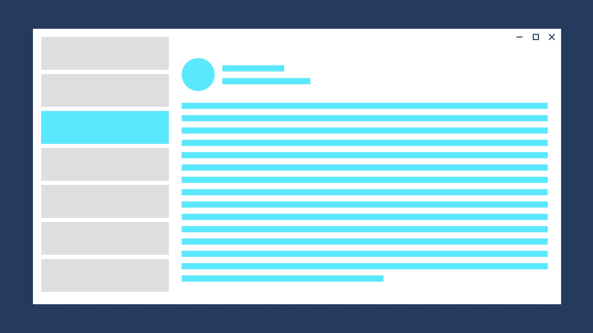
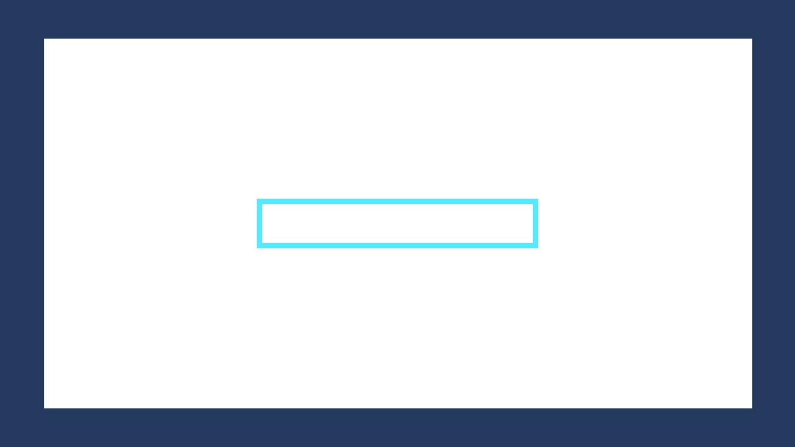

Bringing it together
Timing, easing, directionality, and gravity work together to form the foundation of Fluent motion. Each has to be considered in the context of the others, and applied appropriately in the context of your app.
Here are 3 ways to apply Fluent motion fundamentals in your app.
- Implicit animation
Automatic tween and timing between values in a parameter change to achieve very simple Fluent motion using the standardized values. - Built-in animation
System components, such as common controls and shared motion, are "Fluent by default". Fundamentals have been applied in a manner consistent with their implied usage. - Custom animation following guidance recommendations
There may be times when the system does not yet provide an exact motion solution for your scenario. In those cases, use the baseline fundamental recommendations as a starting point for your experiences.
Transition example

Direction Forward Out:
Fade out: 150m; Easing: Default Accelerate
Direction Forward In:
Slide up 150px: 300ms; Easing: Default Decelerate
Direction Backward Out:
Slide down 150px: 150ms; Easing: Default Accelerate
Direction Backward In:
Fade in: 300ms; Easing: Default Decelerate
Object example

Direction Expand:
Grow: 300ms; Easing: Standard
Direction Contract:
Grow: 150ms; Easing: Default Accelerate
Examples
The WinUI 3 Gallery app includes interactive examples of most WinUI 3 controls, features, and functionality. Get the app from the Microsoft Store or get the source code on GitHub
Implicit Animations
Implicit animations are a simple way to achieve Fluent motion by automatically interpolating between the old and new values during a parameter change.
You can implicitly animate changes to the following properties:
-
- Opacity
- Rotation
- Scale
- Translation
Border, ContentPresenter, or Panel
- Background
Each property that can have changes implicitly animated has a corresponding transition property. To animate the property, you assign a transition type to the corresponding transition property. This table shows the transition properties and the transition type to use for each one.
This example shows how to use the Opacity property and transition to make a button fade in when the control is enabled and fade out when it's disabled.
<Button x:Name="SubmitButton"
Content="Submit"
Opacity="{x:Bind OpaqueIfEnabled(SubmitButton.IsEnabled), Mode=OneWay}">
<Button.OpacityTransition>
<ScalarTransition />
</Button.OpacityTransition>
</Button>
public double OpaqueIfEnabled(bool IsEnabled)
{
return IsEnabled ? 1.0 : 0.2;
}
UWP and WinUI 2
Important
The information and examples in this article are optimized for apps that use the Windows App SDK and WinUI 3, but are generally applicable to UWP apps that use WinUI 2. See the UWP API reference for platform specific information and examples.
This section contains information you need to use the control in a UWP or WinUI 2 app.
- UWP APIs: Windows.UI.Xaml.Media.Animation Namespace, Windows.UI.Xaml.Controls namespace
- WinUI 2 Apis: Microsoft.UI.Xaml.Controls namespace
- Open the WinUI 2 Gallery app and see Implicit Transitions in action. The WinUI 2 Gallery app includes interactive examples of most WinUI 2 controls, features, and functionality. Get the app from the Microsoft Store or get the source code on GitHub.
Implicit animations require Windows 10, version 1809 (SDK 17763) or later.